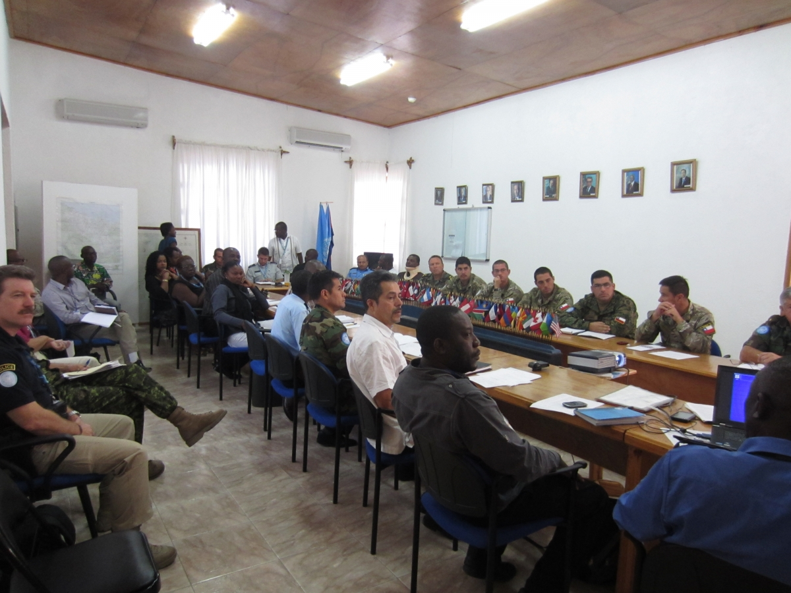

人道支援のための民軍調整
大規模な自然災害など人道危機が発生した際、緊急支援活動を効果的に行うため、輸送機や重機など輸送力・機動力・自己完結力を備えた軍が重要な役割を果たすことがあります。2011年の東日本大震災では、到達困難な被災地域への支援物資輸送や、怪我人あるいは病人の運搬、さらには重機を用いて瓦礫を撤去し支援ルートを確保するなど、自衛隊や在日米軍が人道支援に貢献をしました。一方でたとえ人道支援目的であっても、軍、特に外国軍が展開するとなると、政治的な意味合いを伴ってしまうケースも少なくありません。従って効率的かつ効果的な支援を実現するのみならず、人道性・中立性・公平性・独立性という人道支援の原則を損なわないよう、軍と民間の人道支援アクターとの調整が不可欠となります。
民軍調整の枠組み
人道支援のための民軍調整は、人道原則を守りつつ、民間アクターによる人道支援と競合・重複したり支援の一貫性を欠くことがないよう行うものです。国際的にはいわゆる「オスロ・ガイドライン」が自然災害発生時の外国軍による「軍および民間防衛資産（MCDA）」の活用原則を定めています。また、紛争時や治安の悪い状況下で活用される「MCDAガイドライン」も別途設けられています。人道支援のための民軍調整（UN-CMCoord）という枠組みは、こうしたガイドラインをもとに民間の人道支援アクターと軍との対話や交流を促進するツールとして用いられます。その際、民と軍の関係性は、対処する人道危機の状況や民軍それぞれが担う責任と役割によって変わります。（下図参照）
OCHAの役割

OCHAは、国際緊急人道支援の現場で民軍調整の方針や枠組みを整えるため大きな役割を担っています。具体的には、個別状況に応じたガイドラインを作成する際のサポートや、民軍調整専門官を現場に派遣するといった支援を実施しているほか、必要に応じて、緊急人道支援活動をサポートするために外国軍を動員をすることについて、国際社会に助言する立場にもあります。他方、平時にはOCHAジュネーブ本部にある民軍調整課（CMCS）を中心に、民軍調整に関するガイドラインの作成や、トレーニング、ワークショップ、シミュレーションなどを実施して、関係機関の民軍調整に関する能力開発を支援しています。
アジア太平洋地域
アジア太平洋地域は、最も自然災害の多い地域であると同時に数多くの紛争を抱えていることから、とりわけ人道支援のための民軍調整活動が活発です。特に自然災害が発生した場合、最初に支援活動に乗り出す能力を軍が備えていることが、この地域では広く認識されています。そうした背景から、2004年のスマトラ島沖地震・津波災害での教訓や、2005年に定められた兵庫行動枠組（HFA）等をもとに、「APC-MADROガイドライン」が定められました。APD-MADROガイドラインは、アジア・太平洋地域の状況に則した、自然災害対応における外国軍の活用に関する包括的ガイドラインで、グローバルに適用されているオスロガイドラインを補完するものです。
また同地域で活躍する様々なアクターと連携して、「APC-MADROガイドライン」等に関するトレーニングやワークショップも実施しています。そしてこうした取り組みは、民軍調整に関する革新的な解決策を探るグローバルな議論のひとつとして、2016年にイスタンブールで開催される世界人道サミットにも活かされます。2014年7月23日と24日に東京で開催された世界人道サミット北・南東アジア地域準備会合でも、民軍調整が大きく取り上げられました。
関連リンク
Humanitarian Civil-Military Coordination（OCHA本部ウェブサイト 英語）>>
UN Humanitarian Civil-Military Coordination（OCHAアジア太平洋地域事務所ウェブサイト 英語）>>
国連が定めた民軍調整の枠組み（UN-CMCoord）>>
｢アジア太平洋地域で災害時の民軍調整を強化｣（日本語）>>
OCHA on Message ‘Civil-Military Coordination’（英語）>>
自然災害時の救援活動における民軍調整と『国際スタンダード』 (赤星聖・渡部正樹共著 国際公共政策研究第19巻) >>
自然災害時の救援活動における民軍調整と『国際スタンダード』 (赤星聖・渡部正樹共著 国際公共政策研究第19巻) >>
「民軍共存で紛争地援助を」 （国際開発ジャーナル2015年3月号）>>
「平成27国際平和協力民軍連携研究会」（陸上自衛隊中央即応集団）>>
同研究会における渡部正樹神戸事務所長の基調講演（陸上自衛隊中央即応集団）>>